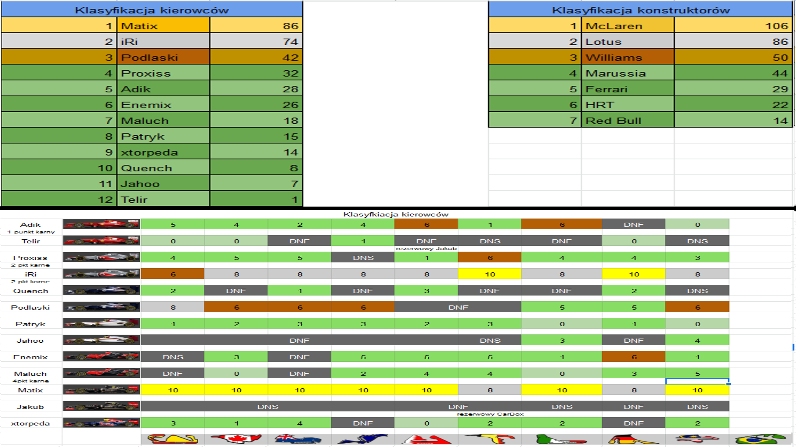
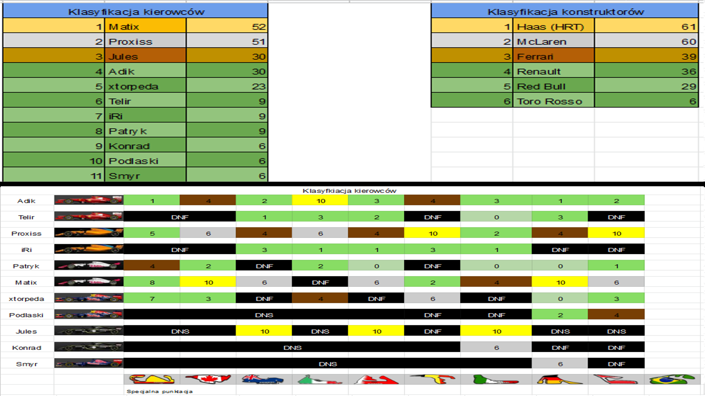

Tak prezentują się klasyfikacje generalne kierowców i konstruktorów sezonu trzeciego w splicie F1 2012 (aktualizowane na bieżąco, zaraz po każdym z wyścigów):

Tak prezentują się klasyfikacje generalne kierowców i konstruktorów sezonu durgiegoego w splicie F1 2018 (aktualizowane na bieżąco, zaraz po każdym z wyścigów):

Tak prezentują się klasyfikacje generalne kierowców i konstruktorów sezonu drugiego w splicie F1 2012 (aktualizowane na bieżąco, zaraz po każdym z wyścigów):

Tak prezentują się klasyfikacje generalne kierowców i konstruktorów sezonu pierwszego w splicie F1 2018 (aktualizowane na bieżąco, zaraz po każdym z wyścigów):

Tak prezentują się klasyfikacje generalne kierowców i konstruktorów sezonu pierwszego w splicie F1 2012: